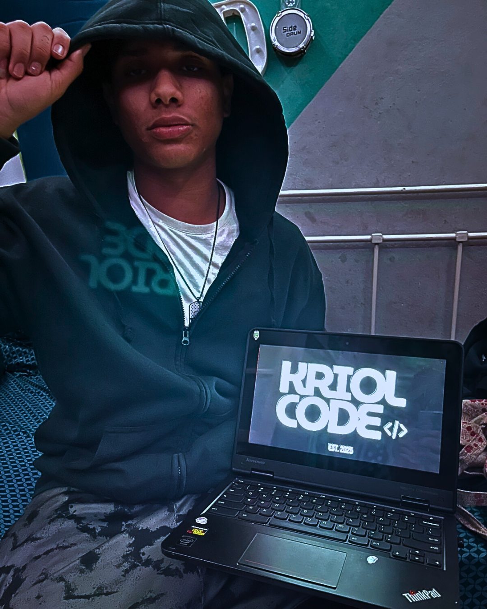

HELLO WORLD 👋
Full-Stack Developer & Systems Architect
"Engineering performance where others see limitations."
Praia, Cabo Verde 🇨🇻
THE POWER STATS
My journey began 4 years ago, not with complex websites, but with the raw logic of a calculator. I didn't just want to code; I wanted to understand how a machine "thinks." This curiosity led me from building 2D physics environments to winning a national Game Jam 3-day trial, proving that I can deliver high-stakes solutions under extreme pressure.

THE PROJECT MOSAIC
MISSION
Modernizing the digital infrastructure for an educational institution.
MISSION
Developing a community hub for local Cape Verdean developers.
MISSION
Bypassing factory limitations to convert 4GB RAM/16GB ROM into a Linux Workstation.
MISSION
Winning project built under a 72-hour deadline.
THE TOOLKIT
Specialized in Debian-based systems (Q4OS). Expert in terminal-based management, custom kernel optimization, and lightweight environment configuration.
Advanced administration, registry optimization, and performance tuning for development workflows.
Proven ability to maintain a dual-boot ecosystem (Main PC + Laptop) for synchronized development and testing.
Experienced in BIOS/UEFI manipulation and flashing custom firmware (MrChromebox) to bypass manufacturer hardware locks.
Deep understanding of AMD Ryzen & NVIDIA RTX architectures to minimize bottlenecks (e.g., managing single-channel RAM limitations).
Expertise in workstation setup, including multi-monitor configurations, peripheral management (USB Hub/Amps), and HD audio routing.
Advanced use of Chain-of-Thought (CoT) and System Instruction frameworks to generate high-precision code and documentation.
Using LLMs to clean, structure, and interpret raw data sets for logical decision-making.
Integrating AI tools to automate repetitive tasks, troubleshoot hardware errors, and rapidly prototype school infrastructure (ESPCR).